Capstone Project:
Right Whale call recognition using Convolutional Neural Networks
Isabel María Villalba Jiménez Thursday 3rd November, 2016
Right whales are one of the most endangered species around the world, with only a few 400 remaining. Many of casualties among them are caused by crashing into boats. One way of avoiding these collisions is to alert ships when whales are detected in the proximity.
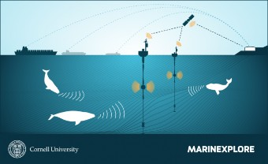
Figure 1: Illustration of the deployment of the buoys in the sea while coexisting with whales [1]
This work comes from a proposal of the Cornell University’s Bioacoustic Research Program of finding new ways of improving the detection of these mammals through the audio signal of the buoys network. Cornell University provides for the competition a dataset with recordigs made by the buoys. The proposal was made through a Kaggle competition named The Marinexplore and Cornell University Whale Detection Challenge [1] “Copyright © 2011 by Cornell University and the Cornell Research Foundation, Inc. All Rights Reserved”.
Right whales make a half-dozen types of sounds, but the most characteristic one is the up-call. This type of "contact call", is a little like small talk– the sound of a right whale going about its day and letting others know it is nearby. In figure 2 it is represented the spectrogram of an up-call which sounds like a deep, rising “whoop” that lasts about a second (sound in [2], other calls in [3]).
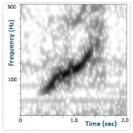
Figure 2: Spectrogram of a rigth whale up-call [2]
The goal of this work is to present a model capable of detecting the right whale’s up-call, which is the most characteristic call of this specie, from the audio detected by the buoys deployed in the sea.
Impressed by the working principle of Convolutional Neural Networks, I decided looking for uses beyond pure image classification. I also had been wondering if anything related to animals and whales could be done. I started looking in the internet and found several Kaggle competitions: one on whale detection through images (Right Whale Recognition), and other on recognizing the North Atlantic Right Whale call (The Marinexplore and Cornell University Whale Detection Challenge). Searching for applications of Convolutional Neural Networks in sound recognition, I found an entry related to the The Marinexplore and Cornell University Whale Detection Challenge. In [4] Daniel Nouri proposed to use ConvNets not just to go across the spectrogram of the whale calls, but try to recognize a pattern by simply looking at its image, like a human could. With this proposal he got pretty good results with a very straight forward approach. I decided to give it a try and look for most used ConvNets schemes and see their performance in this competition.
The workflow can be organized as follows:
sound samples exploration
spectrogram generation and image processing (contrast, appropriate dimensions...)
separation of dataset into training, cross-validation and test dataset and save into pickle
select ConvNets model and adjust parameters
define structure of the ConvNet adequate for the images: depth of layers, and stride and patch size of filters and pooling layers
AUC vs epochs (or training iterations), Error vs epochs, for different batch sizes
tune the model using regularization and decaying learning rate
compare the performance of winning model using the reduced version train and test dataset extracted from the train dataset
The main evaluation metric for this project will be that used in the Kaggle competition, this is the
The receiver operating characteristic (ROC) curve is a graphical plot that illustrates the performance of a binary classifier system as its discrimination threshold is varied. The curve is created by plotting the true positive rate (TPR) against the false positive rate (FPR) at various threshold settings.
The true-positive rate is also known as sensitivity, recall or probability of detection. The false-positive rate is also known as the fall-out or probability of false alarm.
The ROC curve is thus, the sensitivity as a function of fall-out. In general, if the probability distributions for both detection and false alarm are known, the ROC curve can be generated by plotting the cumulative distribution function (area under the probability distribution from −∞ to the discrimination threshold) of the detection probability in the y-axis versus the cumulative distribution function of the false-alarm probability in x-axis (see figure 3)[5].
Other interesting tool can be the confusion matrix, which is a more detailed version of the ROC curve. The confusion matrix is a table that shows the predicted labels for each of the true input labels. Hence, this table shoes true positives (TPs), false positives (FPs), true negatives (TNs) and false negatives (FNs). Each prediction result or instance of the confusion matrix represents a point in the ROC space [5].
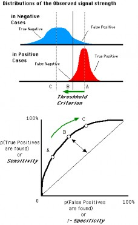
Figure 3: ROC curve graphic explanation [6]
Another important measure can be the error rate vs iterations for different batch sizes. The error rate used can be the percentage of wrong classified samples. This metric is widely used in literature for ConvNets [7, 8] as it gives an insight of the state of training of the network. It is quite common to detect over-training. When this phenomenon occurs, the training error keeps decreasing over time, but the test error goes through a minimum and then starts increasing after a certain number of iteration [7].
The dataset used comes from the competition and consists of 30,000 training samples and 54,503 testing samples. Each candidate is a 2-second .aiff sound clip with a sample rate of 2 kHz. The file "train.csv" gives the labels for the train set. Candidates that contain a right whale call have label=1 otherwise, label=0. These clips contain any mixture of right whale calls, non-biological noise, or other whale calls [2, 3].
The training dataset is imbalanced, consisting of 7027 right whale up-calls samples (label=1) and 22973 non right whale up-calls samples (label=0) (figure 4a), with a total of 30000 samples.
Test labels are not available in the dataset file and Kaggle will not make it available since the competition is closed. As it will be explained later in the section Model Evaluation and Validation IV.I, the number of samples in the training dataset are not enough to provide good amount of data for training, validation and testing. I decided to obtain the labels using winning models and extend the amount of data available for training. Data distribution is presented in figure 4b. The test dataset is also imbalanced, with 13276 right whale up-calls samples (label=1) and 41227 non up-calls samples (label=0), with a total of 54503 samples.
As it can be seen, the training and test dataset have more or less the same proportion of data from each label. However, both dataset are quite imbalanced. In order to deal with this problem, I could just balance the samples used (get the same amount of labels from each type) or try to use an algorithm that penalizes this imbalance.
The dataset split will be as follows: training dataset is split into training and validation dataset, with respectively, 90% and 10% of the training data, which means 12648 and 1406 samples from the balanced training dataset. This 90-10 split, instead of the usual 80-20 split, is due to the lack of data in the training dataset, what makes to put the efforts in maximizing the amount of data for training. Data from the extended dataset could have been added, but I preferred to keep the training to the true training samples and labels, and not to give any mislabeled data in this process. For testing, labels obtained from the simulation will be used. However, the whole test dataset is too big to evaluate in iterations and it will be reduced to 10000 random samples from the 54503 test samples.
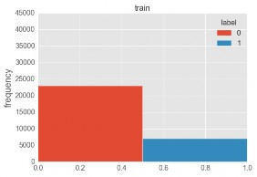 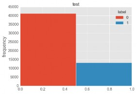
In figure 5, samples corresponding to right-whale up-call (label = 1) show the that the energy of the signal is below 250Hz (see figure 2) and they exhibit a clear pattern. This fact will help to reduce information processed to that range of frequencies. In the second row, corresponding to negative identifications (label = 0) this pattern is not present. However, some samples from other whale species or corresponding to right-whale making other calls are included in the label 0. This could be the case of sample train6776 in figure 5.
Recordings have a duration of 1.8 seconds and a sampling rate of 2000 Hz. The raw spectrogram of the recordings results in images of 129x23 pixels.
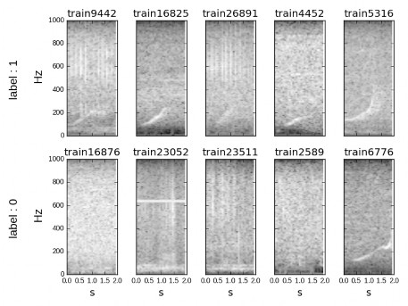
Figure 5: Samples for right whale up-call (label 1) and no-right-whale up-call (label 0).
Convolutional Neural Networks (ConvNets) are a type of Neural Networks (NNs) that make the assumption that inputs are images. This allows to encode certain properties into the architecture that make the forward function more efficient to implement and vastly reduce the amount of parameters in the network [11]. ConvNets, like other NNs, are made up of layers. These layers
(called hidden layers) transform input 3D volumes to output 3D volumes with some differentiable function that may or may not have parameters [11]. This is an interesting property of ConvNets: layers have neurons arranged in 3 dimensions (width, height and depth) (see figure 6).
There are three main types of layers that are used to build ConvNets [11]:
Convolutional Layer (CONV): computes the output of neurons connected to local regions of the input, performing the dot product between their weight and a small region that are connected to. If the input is 3D (i.e. an image with RGB colors) this layer will also be 3-dimensional. Four hyperparameters control the size of the output volume: the depth, filter size, stride, and zero-padding. Depth (D) is related to the number of filters used in the layer, the filter or patch have dimensions (F) (i.e. 2x2) and stride (S) is referred to the displacement of the filter. The amount Zero-padding (P), which allows controlling the spatial size of outputs.
Pooling Layer (POOL) (or Subsampling Layer): performs downsampling operation along spatial dimensions. Can be max-pooling (taking the maximum of a region), average-pooling (taking the average of a region) or other types of results from applying a function to a region of the image. It has two main hyperparameters: the spatial extent of the filter or patch where pooling is applied (F) and the stride (S) of this filter.
Fully-Connected Layer (FC): is the same type of layer as in NNs.
Usually, a CONV layer is followed by a Rectified Linear Unit (RELU) layer, which performs an element-wise activation function (i.e. max(0,x), logistic function, tanh).
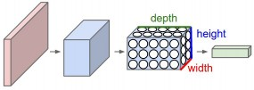
Figure 6: ConvNet 3D structure [11]
LeNet is one of the first successful applications of Convolutional Networks, developed by Yann LeCun in the 90s. One of the versions of LeNet is LeNet-5, which is highly used for handwritten and machine-printed character recognition. Figure 7 shows the structure of the network, composed of 2 convolutional layers, 2 fully connected layers and 2 subsampling or pooling layers. The layers follow the sequence: INPUT -> CONV -> RELU -> SUBS (POOL) -> CONV -> RELU -> SUBS (POOL) -> FC -> RELU -> FC, for INPUT, CONV, RELU, SUBS, FC.
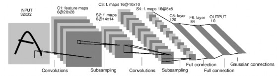
Figure 7: LeNet-5 structure [7]
Other more complex ConvNet is AlexNet, developed by Alex Krizhevsky et al. [8]. The AlexNet was submitted to the ImageNet ILSVRC challenge in 2012 and significantly outperformed the second runner-up (top 5 error of 16% compared to runner-up with 26% error). It has a very similar
architecture to LeNet, but it is deeper, bigger, and features Convolutional Layers stacked on top of each other (previously it was common to only have a single CONV layer always immediately followed by a POOL layer)[11]. Figure 8 shows the structure of the network, composed of 5 convolutional layers, 3 fully connected layers and 3 subsampling or pooling layers. The layers follow the sequence: INPUT -> CONV -> RELU -> SUBS -> CONV -> RELU -> SUBS -> CONV -> RELU -> CONV -> RELU -> SUBS -> FC -> RELU -> FC.
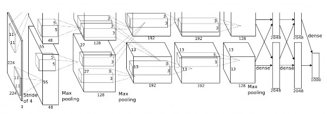
Figure 8: AlexNet structure[8]
I will try to compare the performance of popular ConvNets (i.e. LeNet-5 proposed by Lecun [7] or AlexNet, the winner of the 2010 and 2012 ImageNet Large Scale Visual Recognition Competition (ILSVRC) proposed by Krizhevsky [8, 12]) with the performance of the winning model of the competition which is based on Gradient Boosting (SluiceBox: Github) and the Daniel Nouri’s model based on Krizhevsky’s 2012 ILSVRC ConvNet model [8] (source), which first inspired this work.
The Area Under the Curve (AUC) (see the Evaluation metrics section I.III) of these models in the public leaderboard was:
SluiceBox: 0.98410 (1st position)
Nouri: 0.98061 (6th position with 1/4 times the submission of the winner)
Nevertheless, I will not be able to compare the performance of my models to these results. The reason is that I do not have the test labels and also, the public leaderboard data test used is slightly different for each participant. I will try two different approaches:
assuming that there are enough complete data samples (train dataset), trying to increase the accuracy as much as possible
assuming the predictions generated by the winning model as test labels and them as reference to compare our model with
Consequently, it will not be easy to truly compare the performance of this model with the ones in the competitions. Taking into consideration all the factors explained above, 0.95 AUC can be a really good value to achieve.
The processing of the images will consist in the usual mean subtraction and normalization (division by standard deviation) [13]. The function used for this purpose is the StandardScaler from the preprocessing module from sklearn [14]. The result of this process applied to images in figure 5 is presented in figure 9.
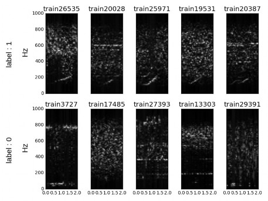
However, after applying this processing, images are not clear enough and energy where up-calls are contained is very low. In order to make them more visible, images in figure 5 are first processed applying log10 and then normalized subtracting mean and dividing by the standard deviation. This method is widely used in spectrogram visualization when there is to rescale images, making minimum values more visible.
As it was commented previously, recordings have a duration of 1.8 seconds and a sampling rate of 2000Hz. The raw spectrogram of the recordings result in images of 129x23 pixels. Two problems arise from this: the excess of redundant information in frequencies not important for the detection of the up-call and the limitation in terms of the image of being processed by the network.
In order to solve the first problem, the frequency range will be limited 0-250 Hz, what will result in images of size 33x23 px. Still, this is not good for a ConvNet with lots of convolutions and pooling. It is necessary to resize the image and a good number is multiple of 2. Hence, I will choose images to be 32x32 px and will obtain additional pixels using interpolation.
The model implemented is LeNet-5 (see figure 7). The only difference in the F6 layer, which has been removed. This layer is used for the detection of ASCII characters in 7x12 bitmaps, but this network does not intend to do so, it just needs to detect right-whale up-call or not.
The structure of the network is as follows (F= Filter, S= Stride, D= Depth):
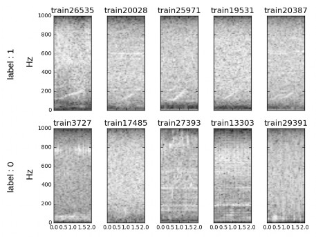
Figure 10: Processed samples after mean subtraction and normalization for right whale up-call (label 1) and no-right-whale up-call (label 0).
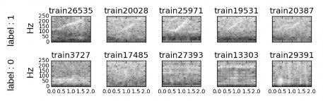
Figure 11: Samples reduced to 32x32 pixels after log10 and mean subtraction and normalization for right whale up-call (label 1) and no-right-whale up-call (label 0).
INPUT layer: 32x32 px image in gray scale represented with 8-bit number (0-255 levels).
C1 - CONV layer: F = 5x5, S = 1, D = 6
S2 - POOL layer: F = 2x2, S = 2, D = 6
C3 - CONV layer: F = 5x5, S = 1, D = 16
S4 - POOL layer: F = 2x2, S = 2, D = 16
C5 - CONV layer: F = 5x5, S = 1, D = 120
F5 - FC layer: neurons= 120 x 2, one per label(considering label 0 and label 1)
The gradient descent main parameter is the learning rate (α). The learning rate expresses the speed of convergence of the gradient descent. Large learning rates lead to faster convergence but it may miss the minimum and not converge properly. Low learning rates lead to a better convergence point, but it is slower, requiring more steps and more memory allocation. A good compromise is to use a decaying learning rate: high values for the first epochs to accelerate the initial convergence and then smaller ones to slow it down.
2
Regularization is a common way to prevent over-fitting and the most used method is L2 regularization. This type of regularization penalizes the square magnitude of all parameters, adding the term 1 λω2 to the prediction, for λ the regularization strength [11]. In this work L2 regularization will be used to control the over-fitting.
The network has been implemented making use of Tensorflow, using the basic of ConvNets explained in the Udacity Deep Learning Course [16] and then extending the functionality to more complex networks.
The process followed has been one the iteration over different parameters to obtain the best combination.
In order to select the proper batch size simulations have been performed for different learning rates. After many simulations, I have observed that there must be a trade-off between batch-size and instability. The bigger the batch, the stabler the curves, but the poorer the performance since the number of epochs is smaller. The batch size must be big enough to provide a less noisy curve but small enough to give good values of prediction.
From figure 12a it seems that a good compromise value is a batch size of 5.
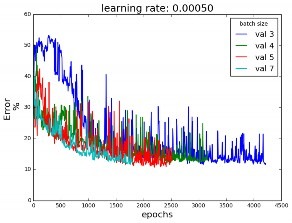 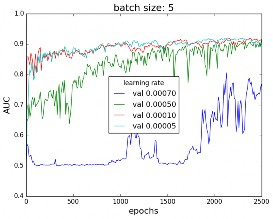
(a) Error curve for the validation dataset, for different (b) AUC for the validation dataset, for different
batch sizes and a learning rate α=0.0005
learning rates and a batch size = 5
Figure 12
Secondly, for a fixed batch size , the cost has been calculated for different learning rates. Learning rates too big may not find the minimum and converge too fast. Small learning rate may be too slow and not fast enough for a small dataset like the one in this work. A compromise value must be chosen, showing a slope good that guarantees convergence. Figure 12b shows that for the selected batch size of 5, a learning rate α of 0.0005 seems like a good value. Figure 13 shows that there is not over-fitting, since there is no gap between the training curve and the validation and test curves.
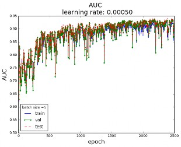
Figure 13: AUC for batch size = 5 and learning rate α=0.0005
Finally, for fixed batch size and learning rate, the AUC has been calculated for regularization parameters. Regularization is a good way to limit over-fitting, allowing the model to generalize better. Figure 14 shows the AUC curve for different values of the regularization parameters. Figure 14a shows that a good value for the regularization parameter can is near 0.95, and figure 14b shows that for the selected batch size of 5 and learning rate of 0.0005 a good regularization value is 0.97, since it allows to reach a greater AUC.
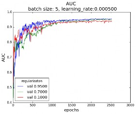 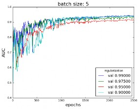
(b)
Figure 14: AUC in the validation dataset for different regularization values, batch size = 5 and learning rate α=0.0005
The model used is the LeNet-5 [7]. Figure 15 shows the AUC and the error for different epochs, achieving 0.944 AUC in the test set (and up to 0.958 depending on the test split) and an error of 12% when reaching 2500 epochs, batch size = 5, learning rate α=0.0005 and regularization parameter = 0.97. Figure 15 shows there is no over-fitting, since validation and test curve follow the training curve. This is clearly a good result given the limitations related to data in this work previously explained in section II.I and is very close to the objective of 0.95 AUC stated in II.IV.
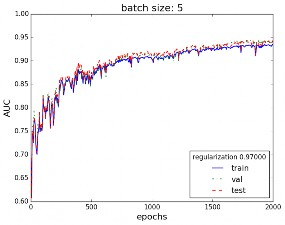 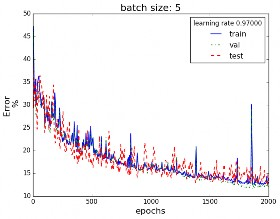
Figure 15: (a) AUC and (b) error for the train validation and test dataset, for the final model batch size = 5, learning rate α=0.0005and regularization parameter = 0.97
One problem I faced when training the model was the limitation in terms of data samples for training which reduced the maximum AUC obtained. In order to solve it, labels for the test dataset have been obtained using the evaluations from the winning model as true labels (SluiceBox: 0.98410 AUC). This has allowed o increase the volume of data samples available to train the model and hence, increase its performance. I have taken this decision after taking into consideration the
processed of obtaining the samples. The sounds were firstly recorded when a buoy detected an up-all in the area. Afterwards, samples were labeled by human ear. This leads to a lot of mislabeled samples (as mentioned in [4]), and gives the intuition that using the labels from the prediction of a good model as test dataset, freeing samples for training, can be more good than harm. This has allowed to extend the available data for training (from around 8000 to 12500 samples from the balanced dataset of 14000 samples) and have available 54503 samples from the unbalanced testing dataset for testing, though it was used 10000 random samples for computational issues. This dataset was not artificially balanced just to try how the training would perform in a real world with little samples from one label when compared to the other.
This work has shown the use of simple ConvNet for audio recognition, obtaining good performance with an AUC of up to 0.958, whereas more complex models as SluiceBox obtained 0.98410 AUC and Nuori 0.98061.
One of the advantages of simpler networks relies upon the reduction of time required for training the model, resulting in fewer computer requirements. With a vast dataset, the system would increase significantly the performance and equal those with more complex structure, making it a simple, yet robust choice.
In this section I will try to give an insight of the network, presenting, as it is frequently done, the characteristics f the first layer. Figure 16a it is presented the evolution of the filters of the first CONV layer (F=5x5) with depth 6 (D=6). These filters are the ones convoluting and sweeping through the image and contain the weights fond the CONV layer neurons. It is clear how, due to backpropagation and minimization of the cost function, weights are changed and they evolve to new and more adequate values for prediction. In fact, the six filters start very undefined and they adapt to their final value.
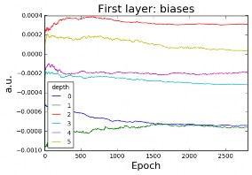
Figure 16b shows the evolution of the biases with the number of epochs and how they tend to stabilize. These biases are the biases of the CONV layer and they change to minimize the cost function.
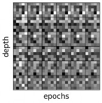
(b)
Figure 16: (a) Weights and (b) biases of the first layer with 6 filters of depth every 500 epochs for batch size=5, learning rate α=0.0005and regularization parameter= 0.97
Finally, figure 17 shows the output every 500 epochs for some samples. It is not clear, but in some of the squares it can be seen the shape of a the up-call.
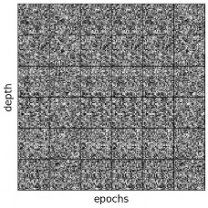
In this project, it is presented how simple ConvNets can be used to label data from the image of the spectrogram, as it in many classification problems. More complex networks may achieve better results, but for an image of 32x32px, I prefer to take the strategy: the simpler, the better.
In this case, the use of LeNet-5 has given a 0.44-0.958 AUC, which is really good given the low complexity of the network.
In this work, the problem is to recognize a simple and very specific spectrogram pattern from in a form of an image. A good rule of thumb for this is the simpler, the better and LeNet-5 achieves good performance with a simple structure.
The complexity of the model should not be the focus, since like in any Machine Learning problem, the most important factor is the amount of data. Collecting more samples and extending the training would make LeNet-5 a good competitor against other models achieving better performance with over-complicated models.
Once resolved the issue with the amount of data, more complex models are good start points to increase the performance and achieve better results and compare the trade-off between complexity with results. Good examples of models to try are AlexNet [8] or GoogLeNet [17]. Dropout has not been applied in this work, since the network has lots of max-pooling layers and regularization, and in these cases, the use of dropout is not clear. Introducing dropout could be a good option to try. Also, methods to make faster training, as Batch Normalization may lead to better results [18].
[1] Kaggle. The Marinexplore and Cornell University Whale Detection Challenge. URL https:
//www.kaggle.com/c/whale-detection-challenge.
[2] Cornell Bioacoustics Research Program. Right Whale’s Up-Call, Cornell Bioacoustics Resear, .
URL http://www.listenforwhales.org/page.aspx?pid=432.
[3] Cornell Bioacoustics Research Program. More Right Whale calls, . URL http://www. listenforwhales.org/page.aspx?pid=442.
[4] Daniel Nouri. Using deep learning to listen for whales — Daniel Nouri’s Blog. URL http:
//danielnouri.org/notes/2014/01/10/using-deep-learning-to-listen-for-whales/.
[5] Wikipedia; the free encyclopedia. Receiver Operating Characteristic (ROC). URL https:
//en.wikipedia.org/wiki/Receiver{_}operating{_}characteristic.
[6] Wikiwand. Receiver operating characteristic. URL http://www.wikiwand.com/it/ Receiver{_}operating{_}characteristic.
[7] Yann LeCun, Léon Bottou, Yoshua Bengio, and Patrick Haffner. Gradient-based learning applied to document recognition. Proc. IEEE, 86(11):2278–2323, 1998. ISSN 00189219. doi: 10.1109/5.726791.
[8] Alex Krizhevsky, Ilya Sutskever, and Geoffrey E Hinton. ImageNet Classification with Deep Convolutional Neural Networks. Adv. Neural Inf. Process. Syst., pages 1–9, 2012. ISSN 10495258. doi: http://dx.doi.org/10.1016/j.protcy.2014.09.007.
[9] M A McDonald and S E Moore. Calls recorded from North Pacific right whales (<i>Eubalaena japonica</i>) in the eastern Bering Sea. J. Cetacean Res. Manag., 4(3):261–266, 2002. ISSN 1561-0713. URL http://www.afsc.noaa.gov/nmml/PDF/rightcalls.pdf.
[10] Mahdi Esfahanian, Hanqi Zhuang, Nurgun Erdol, Edmund Gerstein, Computer Science, and Boca Raton. Comparison of Two Methods for Detection of North Atlantic Right. Ieee, pages 559–563, 2015.
[11] Johnson Justin Karpathy Andrej. CS231n Convolutional Neural Networks for Visual Recogni- tion, . URL http://cs231n.github.io/.
[12] Alex Krizhevsky and G Hinton. Convolutional deep belief networks on cifar-10. Un- publ. Manuscr., pages 1–9, 2010. URL http://scholar.google.com/scholar?hl=en{&}btnG= Search{&}q=intitle:Convolutional+Deep+Belief+Networks+on+CIFAR-10{#}0.
[13] Johnson Justin Karpathy Andrej. CS231n Convolutional Neural Networks for Visual Recogni- tion, . URL http://cs231n.github.io/neural-networks-2/.
[14] sklearn.preprocessing.StandardScaler — scikit-learn 0.18 documentation. URL http:// scikit-learn.org/stable/modules/generated/sklearn.preprocessing.StandardScaler.html.
[15] Sebastian Ruder. An overview of gradient descent optimization algorithms. sep 2016. URL http://arxiv.org/abs/1609.04747http://sebastianruder.com/optimizing-gradient-descent/ index.html{#}gradientdescentvariants.
[16] Udacity. Deep Learning Course Repository. URL https://github.com/tensorflow/tensorflow/ tree/master/tensorflow/examples/udacity.
[17] Christian Szegedy, Wei Liu, Yangqing Jia, Pierre Sermanet, Scott Reed, Dragomir Anguelov, Dumitru Erhan, Vincent Vanhoucke, and Andrew Rabinovich. Going deeper with convolutions. In Proc. IEEE Comput. Soc. Conf. Comput. Vis. Pattern Recognit., volume 07-12-June, pages 1–9, sep 2015. ISBN 9781467369640. doi: 10.1109/CVPR.2015.7298594. URL http:
//arxiv.org/abs/1409.4842.
[18] Sergey Ioffe and Christian Szegedy. Batch Normalization: Accelerating Deep Network Training by Reducing Internal Covariate Shift. arXiv:1502.03167, pages 1–11, 2015. ISSN 0717-6163. doi: 10.1007/s13398-014-0173-7.2. URL http://arxiv.org/abs/1502.03167.